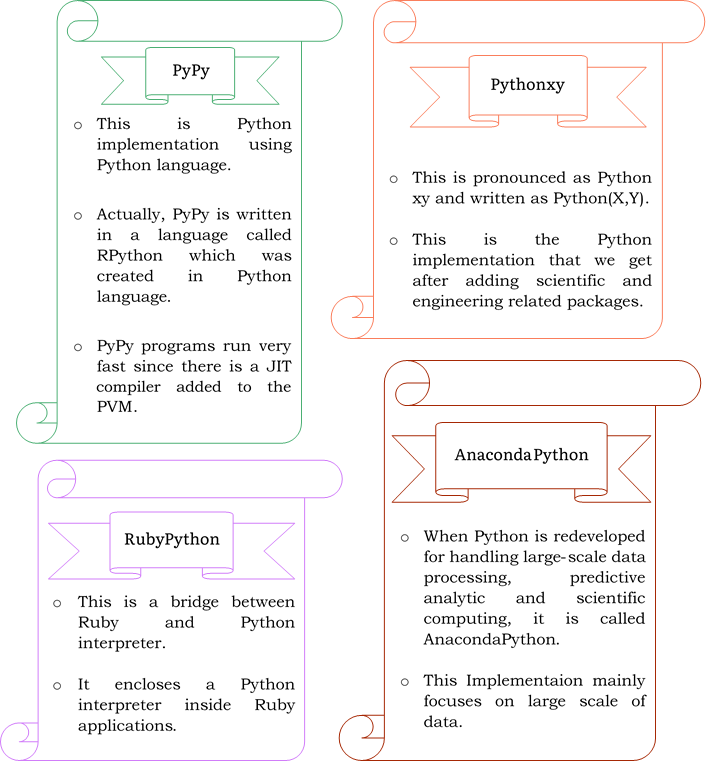

Python was developed in the late eighties, i.e., late 1980's by Guido van Rossum at the National Research Institute for Mathematics and Computer Science in the Netherlands (managed by the DUTCH Government) as a successor of ABC language capable of exception handling and interfacing.
Python is derived from programming languages such as ABC, Modula 3, small talk, Algol-68.
Van Rossum picked the name Python for the new language from a TV show, Monty Python's Flying Circus.
Python page is a file with a .py extension that contains could be the combination of HTML Tags and Python scripts.
Pythons first working version was ready by early 1990 and Van Rossum released it for the public on February 20, 1991. Then on 16 October 2000, Python 2.0 was released with many new features.
On 3rd December 2008, Python 3.0 was released with more testing and includes new features.
History and Development of Python
Python is considered as one of the most versatile programming languages.
Python is a general-purpose object-oriented programming language with high-level programming capabilities.
It has become famous because of its apparent and easily understandable syntax, portability and easy to learn.
Python is a programming language that includes features of C and Java. It provides the style of writing an elegant code like C, and for object-oriented programming, it offers classes and objects like Java.
What can Python do?
Python can be used on a server to create web applications.
Python can be used alongside software to create workflows.
Python can connect to database systems. It can also read and modify files.
Python can be used to handle big data and perform complex mathematics.
Python can be used for rapid prototyping, or for production-ready software development.
Why Python?
Python works on different platforms (Windows, Mac, Linux, Raspberry Pi, etc.).
Python has a simple syntax similar to the English language.
Python has syntax that allows developers to write programs with fewer lines than some other programming languages.
Python runs on an interpreter system, meaning that code can be executed as soon as it is written. This means that prototyping can be very quick.
Python can be treated in a procedural way, an object-orientated way or a functional way.
Python is considered as one of the most versatile programming languages.
Python is a general-purpose object-oriented programming language with high-level programming capabilities. It has become famous because of its apparent and easily understandable syntax, portability and easy to learn.
Python is a programming language that includes features of C and Java. It provides the style of writing an elegant code like C, and for object-oriented programming, it offers classes and objects like Java.
It is used for:
Web development (server-side) — Python can be used to develop scalable and secure web applications. Frameworks like Django, Flask, Pyramid etc. are amazing to design and develop web based applications.
Software development — As Python can be used to develop GUI too, hence it is a great choice for developing desktop applications. Tk is an open source widget toolkit which can be used to develop desktop applications with Python. Kivy is another such platform.
Scientific Computing Application — For its amazing computational power and simple syntax, Python is used for scientific computing applications. Python libraries like SciPy and NumPy are best suited for scientific computations.
AI and ML (Artificial Intelligence and Machine Learning) — Python is at the fore front of the paradigm shift towards Artificial Intelligence and Machine Learning.
Image Processing — Python is known for its image processing capabilities, which includes traversing and analyzing any image pixel by pixel. There are numerous Python libraries available for image processing, for example: Pillow, scikit-image etc.
System Scripting.
Websites like Instagram, Reddit, Mozilla, have been developed using Python. There are various web frameworks like Django (most popular one) and Pyramid, based on Python, which can be used to develop modern web applications.
Features of Python
Simple: Python is a simple programming language. When we read a Python program, we feel like reading English sentences. It means more clarity and less stress on understanding the syntax of the language. Hence, developing and understanding programs will become easy.
Easy to learn: Python uses very few keywords. Its program used very simple structure. So developing programs in Python become easy. Also Python resembles C language. Most of the language constructs in C are also available in Python. Hence, migrating from C to Python is easy for programmers.
High level language: Programming languages are of two types:
Low level — Low level language uses machine code instructions to develop programs. These instructions directly interact with the CPU. Machine language and assembly language are called low level languages.
High level — High level languages used English words to develop programs. These are easy to learn and use. Like COBOL, PHP or Java, Python also used English words in its program and hence it is called high level programming language.
Dynamically typed: In Python we need not declared anything. An assignment statement by a name to an object, and the object can be of any type. If a name is assigned to an object of one type, it may later be assigned to an object of a different type. This is the meaning of saying that Python is dynamically typed language. Languages like C and Java statically typed. In these languages the variable names and data type should be mentioned properly attempting to assign an object of the wrong type to a variable name triggers error or exception.
Platform independent: When a Python program is compiled using a Python Compiler, it generates byte code. Python’s byte code represents a fixed set of instructions that run on all operating system and hardware. Using a Python Virtual Machine (PVM), anybody can run these byte code instructions on any computer system. Hence Python programs are not dependent on any specific operating system.
Portable: When a program yields the same result on any computer in the world, then it is called a portable program. Python program will give the same results since they are platform independent. Once a Python program is written it can run on any computer system using PVM.
Interpreted: A program code is called source code after writing a Python program we should compile the source code using Python Compiler. Python Compiler translate the Python program into an intermediate code called bytecode. This bytecode is then executed by PVM. Inside the PVM, an interpreter converts the bytecode instruction into machine code so that the processor will understand and run that machine code to produce results.
Procedure and Object Oriented: Python is a Procedure Oriented Programming (POP) as well as an Object Oriented Programming (OOP) language. In Procedure Oriented Programming (POP) (e.g. C and Pascal), the programs are built using functions and procedures. But in Object Oriented Programming (OOP) languages (e.g. C++ and Java), the programs use Classes and Objects.
Extensible: The programs are pieces of code written in C or C++ can be integrated into Python and executed using PVM this is what we see in standard Python that is downloaded from www.Python.org. There are other flavors of Python where programs from other languages can be integrated into Python. For example, Jython is useful to integrate Java code into Python program can run on JVM (Java Virtual Machine). Similarly, Iron Python is useful to integrate .NET programs and libraries into Python programs and run on CLR (Common Language Runtime).
Embeddable: We can insert Python programs into a C or C++ program it means programmers can use this application for their advantage in various software projects.
Object
Object is a unique entity, which contains data and function together in an Object Oriented Programming language.
It is interesting to know that the Objects can interact with each other. An Object can pass the information to another object and retrieves information as well. They interact through messages, which are better known as ‘Message Passing’.
Class
Class is a group of Similar types of Objects, which possess same attributes, and behavior.
Huge library: Python has a big library which can be used on any operating system. Programmer can develop programs very easily using the models available in the Python library.
Scripting language: Scripting languages is a programming language that does not use the Compiler for executing the source code. Rather, it uses an interpreter to translate the source code into machine code on the fly (while running). Generally, scripting language perform supporting task for a bigger application or software. Python is considered as a scripting language as it is interpreted and it is used on the Internet to support other software.
Database connectivity: Python provides interfaces to connect its program to all major databases like Oracle, Sybase or MySQL.
Scalable: A program would be scalable if it could be moved to another operating system or hardware and take full advantage of the new environment in terms of performance.
Batteries included: The huge library of Python contains several small applications (or small packages) which are already developed and immediately available to programmers. These small packages can we use and maintained easily.
To know the entire list of packages included in Python, one can visit: Pythonanywhere.com
Execution of a Python Program
After typing the program with .py extension the next step is to Compile the program using Python Compiler. The Compiler Converts the typed program code (source code) into another code called byte code.
Byte code represents operations like —
Arithmetic Operation,
Comparison Operation,
Memory related Operations,
etc., which run on any operating system and hardware.
The size of each byte code instruction is 1 byte and hence they are called with the name byte code.
These byte code instructions are contained in the file .pyc. Hence, the .pyc file represents a Python compiled file.
The next step is to run the program. Any computer can execute only the binary code which comprises 1s and 0s. Since the binary code is understandable to the machine (computer), it is also called machine code. Now we need to convert our byte code into binary code (machine code) so our computer can understand and execute it. For this purpose, we should use PVM (Python Virtual Machine).
PVM first understands the byte code and converts it into machine code. PVM first understands the processor and operating system in our computer. Then PVM uses an interpreter which understands byte code and convert it into machine code understandable to that processor and into that format understandable to that operating system
An interpreter translates the program source code line by line. Hence, it is slow. The interpreter that is found inside the PVM runs the Python program slowly.
A compiler is added to the PVM. This Compiler also converts the byte code into machine code but faster than the interpreter.
This Compiler is called JIT (Just In Time) compiler. The advantage of JIT is to improve the speed of the execution of a Python program and thus improving the performance.
An interpreted language is a high-level language run and executed by an interpreter (a program which converts the high level language into to machine code then executing) on the go, it processes the program a little at a time.
A compiled language is a high-level language whose code is first converted to machine code bya a compiler (a program which converts the high-level language to machine code) and then executed by an executor (another program for running the code).
Commands to run Python program and separately create .pyc file —
C:\>Python file.py
AND
C:\>Python –m py_compile file.py -m: Stands for Module py_compile: Module name — This module generates the .pyc file for the specified .py file.
The Python compiler creates a separate directory in the current directory by the name _pycache_ where it stores the .pyc file.
The .pyc file name may be something like: file.cPython-34.pyc.
✯ cPython indicates that we are using the Python compiler that was created using C.
Viewing the Byte Code
Program:
#Python program to add two numbers.
a=b=10 print("Sum =",(a+b))
Run —
C:/Python –m dis Sum.py dis: Disassembler (Displays the Binary Code in the human understandable format).
Output —
Flavors of Python
Flavors of Python refer to the different types of Python compilers. These flavors are useful to integrate various programming languages into Python. The following are some of them:

Python Virtual Machine (PVM)
The role of the Python Virtual Machine (PVM) is to convert the byte code instructions into machine code so that the computer can execute those machine code instructions and display the final output. To carry out this conversion, PVM is equipped with an interpreter. The interpreter converts the byte code into machine code and sends that machine code to the computer processor for execution. Since interpreter is playing the main role, often the Python Virtual Machine is also called an interpreter.
Frozen Binaries
The way of converting the Python programs into true executables (generally with .exe extension) is called frozen binaries.
Frozen Binaries have PVM along with .pyc files, related Python libraries.
Frozen Binaries have more size than that of simple .pyc files since they contains PVM and library files also.
✯ py2exe is another party software which produces frozen binaries for Windows.
Memory Management in Python
In Python, Memory allocation and de-allocation are done during runtime automatically. The programmer need not allocate memory while creating objects or deallocate memory when deleting the objects. Python’s PVM take care of such issues.
Everything is considered as an object in Python. For example, Strings are objects. Lists are objects. Functions are objects. Even Modules are also objects. For every object, memory manager (inside the PVM) allocates the memory required for objects created in a Python program. All these objects are stored on a separate memory called heap. Heap is a memory which is allocated during runtime. The size of the heap memory depends on the Random Access Memory (RAM) of our computer and it can increase and decrease its size depending on the requirement of the program.
Garbage Collection in Python
A module represents Python code that performs a specific task. Garbage collector is a module in Python that is useful to delete object from memory which are not used in the program. The module that represents the garbage collector is named as gc. Garbage collector is the simplest way to maintain a count of each object regarding how many times that object is referenced (or used). When an object is referenced twice, its reference count will be 2. When an object has some count, it is being used in the program and hence garbage collector will not remove it from memory. When an object is found with a reference count 0, garbage collector will understand that the object is not used by the program and hence it can be deleted from memory. Hence, the memory allocated for the object is the de-allocated for freed.
Garbage collector can detect reference cycles. A reference cycle is a cycle of references pointing to the first object from last object.
Garbage collector runs automatically. Python schedules garbage collector depending upon a number called threshold. This number represents the frequency of how many times the garbage collector removed (or collected) the objects. When the number of allocations minus the number of deallocation is greater than the threshold number, the garbage collector will run automatically. One can know the whole number by using the method get_threshold() of gc module.
When more and more objects are created and if the system runs out of memory, then the automatic garbage collector will not run. Instead the Python program with throw exceptions (runtime error). When the programmer is sure that his program does not contain any reference cycles, then automatic garbage collector is best suitable.
In some cases, where reference cycles are found in the program, it is better to run the garbage collector manually. For this purpose, collect() method of gc module can be used. Manual garbage collection can be done in two ways: time-based and event-based. If garbage collector is called in certain intervals of time, it is called time-based garbage collection. If the garbage collector is called on the basis of an event, for example, when the user disconnected from an application, is called event based garbage collection. However, running the garbage collector too frequently will slow down the program execution.
Comparisons between C and Python
Comparisons between Java and Python
Points to Remember
Python was developed by Guido van Rossum in the year 1991.
Python is a high level programming language that contains features of Procedure Oriented Programming language like C and Object Oriented Programming language like Java.
In object oriented terminology, an object represents of physical entity that contains behavior. The behavior of an object is represented by attributes (or properties) and actions. The attributes are represented by variables and actions are performed by functions or methods.
In object oriented terminology, a class is an abstract idea which represents common behavior of several objects. Class represents behavior and does not exist physically. Behavior is represented by attributes (variables) and actions (functions). So, a class also contains variables and functions.
A group of object having same behavior comes under the same class.
The standard Python compiler is written in C language and hence called CPython.
There are other flavors of Python, namely Jython IronPython and PyPy.
A Python program contains source code that is first compiled by Python compiler to produce byte code. This byte code is given to Python Virtual Machine which converts the byte code to machine code so that the processor will execute it and display the results.
Python’s byte code is a set of instructions created by the Python development team to represent all type of operations. Each byte code occupies 1 byte of memory and hence the name byte code.
Python Virtual Machine (PVM) is a software containing an interpreter that converts the byte code into machine code depending on the operating system and hardware of the computer system where the Python program runs.
The standard PVM contains only an interpreter and hence Python is called an interpreted language.
PVM is most often called Python interpreter.
The PVM of PyPy contains a compiler in addition to the interpreter. The compiler is called Just In Time (JIT) compiler which is useful to speed up the execution of the Python program.
The programmer need not allocate or deallocate memory in Python. It is the duty of the PVM to allocate or deallocate memory for Python programs.
Memory manager is a module (or sub program) in PVM which will allocate memory for object. Garbage collector is another module in PVM that will deallocate (or free) memory for the unused objects.
The programmer need not call the garbage collector. it will execute automatically when the program is running in memory. In addition, the programmer can also call the garbage collector whenever needed.
The files that contain Python program along with Python compiler and libraries that can execute directly are called frozen binaries.
The ‘py_compile’ module converts a Python source file into a .pyc file that contains byte code instructions. Generally, the .pyc files are provided to the end user.
When the Python source file is given, the ‘dis’ module displays the equivalent byte instruction in human readable format.
About Us
Learning Bistro is Providing the Lecture notes for Python and Java.
CISCE students from Class IX to XII must go through the Java topics, as our Syllabus pattern is based on the latest CISCE Syllabus.
CBSE students from Class XI and XII must go througn Python, it is written efficently with sample codes.
Students can also check for Programming References for both the languages separately.
Learning Bistro is also helpful for Undergraduates.
Feel free to ask for any sample program which is not given in the Programming References.
 for Mratunjya Shankhdhar
for Mratunjya Shankhdhar for Mratunjya Shankhdhar
for Mratunjya Shankhdhar for Mratunjya Shankhdhar
for Mratunjya Shankhdhar for Mratunjya Shankhdhar
for Mratunjya Shankhdhar